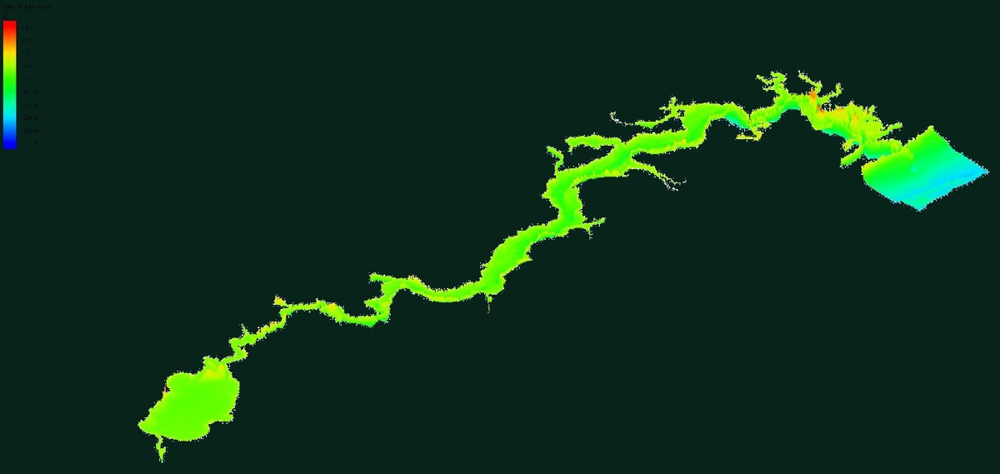

Current, MS thesis at UNF
St. Johns River Estuary
Coupled Delft3D-FLOW, WAQ, and PART models of the St. Johns Estuary, used to see how flow, particle transport, residence time, and water quality respond to sea-level rise and extreme events. The image is my computational grid, coloured by bed elevation.